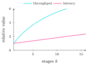

register stages into a feed-forward circuit of delay
register stages into a feed-forward circuit of delay Construction
For a feed-forward path (no loops), add registers on a cut that separates inputs from outputs, crossing every path once; then retime to balance the stages. With logic delay  and register overhead :
and register overhead :
Derivation
Without pipelining one result leaves every . With  balanced stages a new input enters every , and operations are in flight at once. The speed-up of throughput is as : register overhead caps the gain, and latency only grows.
balanced stages a new input enters every , and operations are in flight at once. The speed-up of throughput is as : register overhead caps the gain, and latency only grows.
Picture

: throughput grows with but saturates as register overhead dominates, while latency grows.: throughput saturates near 11, latency keeps growing.
Intuition
An assembly line: each worker does a slice of the job. Cars come out more often; each car still spends as long as before in the factory, a bit longer.
Pitfall
Loops cannot be pipelined this way: a result needed in the next cycle (an accumulator, a branch decision) cannot wait cycles. Processor pipelines must handle such dependences (hazards) explicitly.